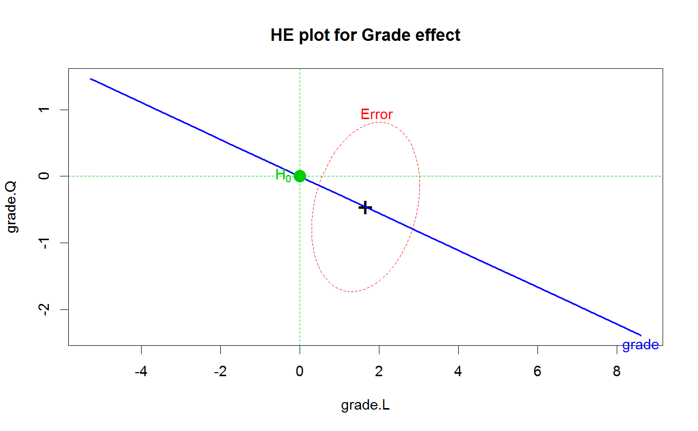

A utility function to draw and label a point in a 2D (or 3D) HE plot corresponding to a point null hypothesis being tested. This is most useful for repeated measure designs where null hypotheses for within-S effects often correspond to (0,0).
mark.H0(x = 0, y = 0, z=NULL, label, cex = 2, pch = 19, col = "green3", lty = 2, pos = 2)
| x | Horizontal coordinate for H0 |
|---|---|
| y | Vertical coordinate for H0 |
| z | z coordinate for H0. If not NULL, the function assumes that
a |
| label | Text used to label the point. Defaults to |
| cex | Point and text size. For 3D plots, the function uses
|
| pch | Plot character. Ignored for 3D plots. |
| col | Color for text, character and lines |
| lty | Line type for vertical and horizontal reference lines. Not
drawn if |
| pos | Position of text. Ignored for 3D plots |
None. Used for side effect of drawing on the current plot.
cross3d, ~~~
Vocab.mod <- lm(cbind(grade8,grade9,grade10,grade11) ~ 1, data=VocabGrowth) idata <-data.frame(grade=ordered(8:11)) heplot(Vocab.mod, type="III", idata=idata, idesign=~grade, iterm="grade", main="HE plot for Grade effect")mark.H0()